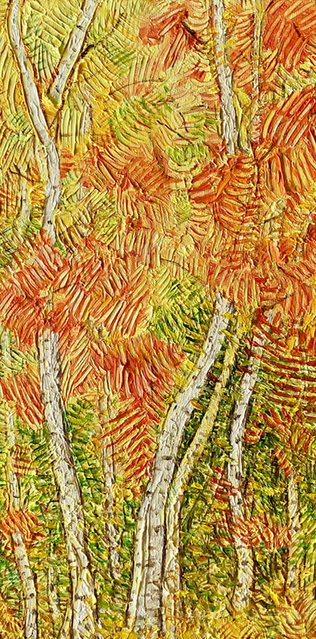
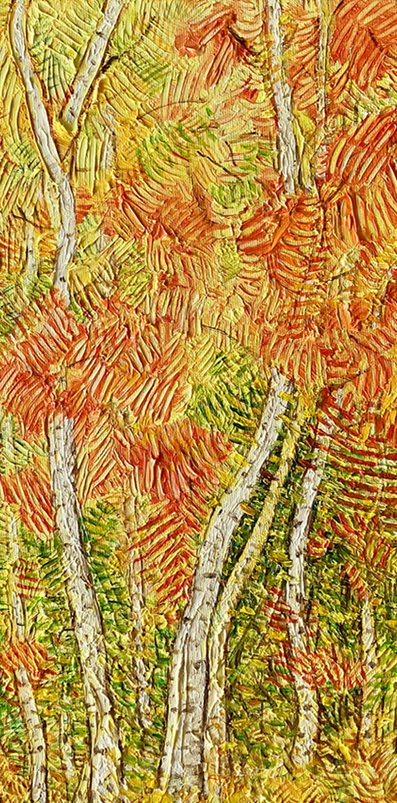

The Resurgence of post-impressionism
new art, contemporary post-impressionism, pointillism
" When I draw,
it's like I'm painting
and when I paint
it's like I'm drawing."


 



Hungarian Painter’s Day - Picture Exhibition III.
He is a representative of the pre- and post-impressionist
tendencies that still have a strong influence. Péter Mol-
nár's stylistic paraphrase is an expression of the Impres-
sionists' cropping, the Neo-Impressionists' optical colour
mixing, the Fauve's tube colours and Van Gogh's linear
brushwork.
Béla Garamvölgyi
painter, curator
Hungarian Painter’s Day - Picture Exhibition II.
Particularly interesting, for example, is the presentation
of the landscape and natural scenery in the individual
works: the play of flickering light and shadow in the
plein-air, the naturalized
meticulously elaborated details, post-impressionism, his
form-breaking color treatment and the dynamic gestures
of abstract expressionism both appear on the canvases,
and each of them highlight the beauty of the natural
scene with its own unique style and tone. (...) In Péter
Molnár's creations, the plastically almost tactile picture
structure, carefully constructed from small lines, offers a
similar aesthetic pleasure. (...)
Lilla Zsófia Szabó
art historian